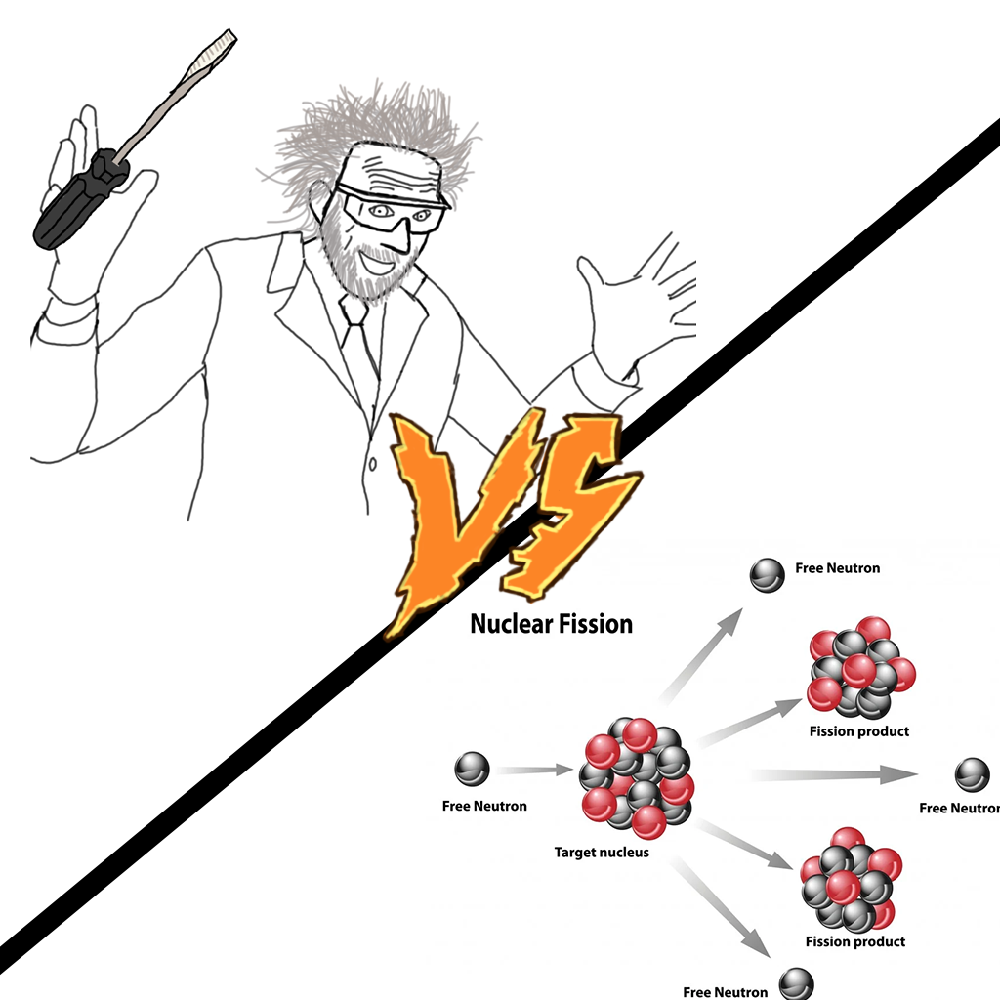

With the very recent development of computers it comes as no suprise that we are struggling to use these bad boys. Some of us even make it worse for others -- and us who don't have time to argue with a terminal all day deal with the fallout of old software (Cmake should have died long ago is what Im trying to say)
I think its only fair to start at the beginning: these high and might "Atoms and Particles" think their all that, well I have just a few words for you:
The late 1930's called, they want their nobel prize back. We trust the government and their theory of some stupid little dots in space? Yeah right, next your going to tell me we use javascript on the server? Surely we would never fall that far from God's light.
Time skip and we have fortran